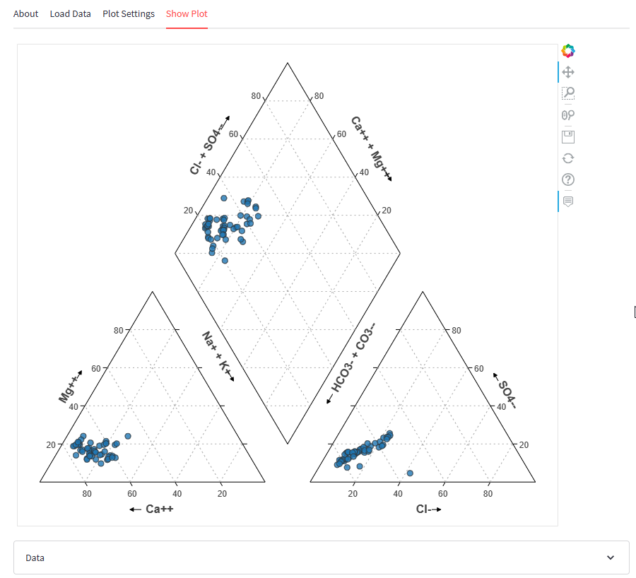
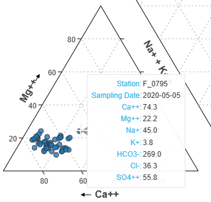
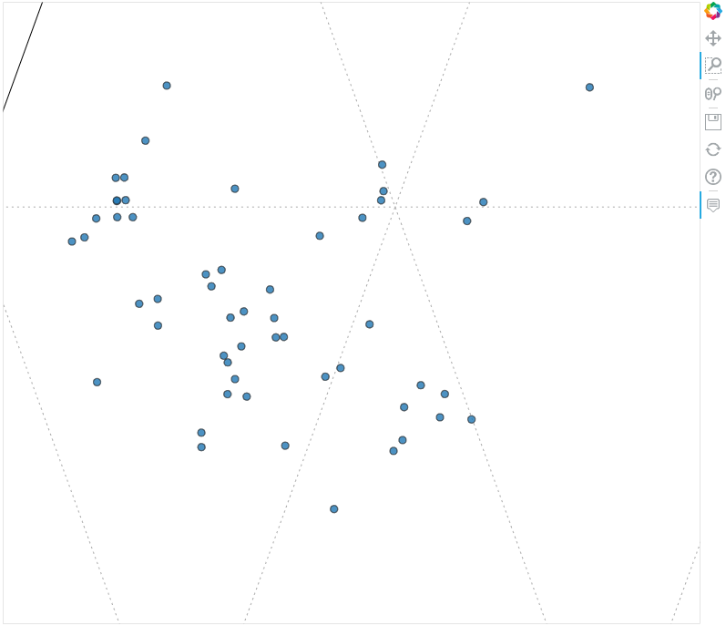
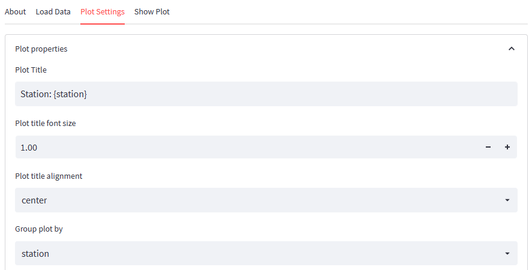
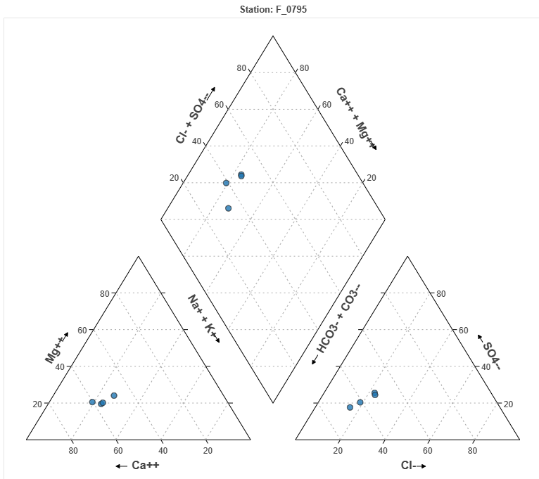
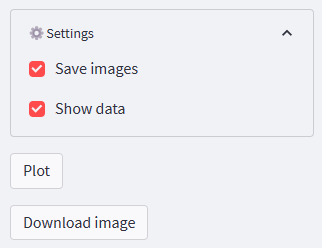
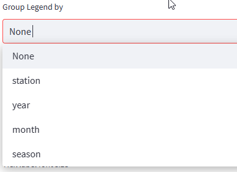
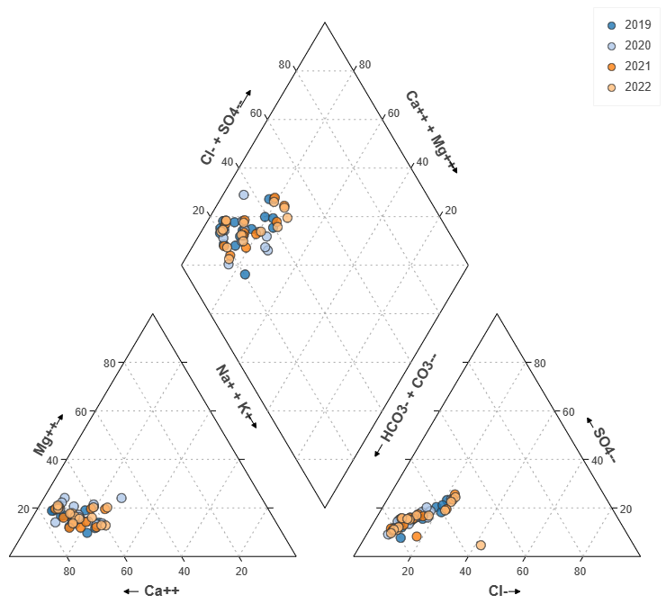
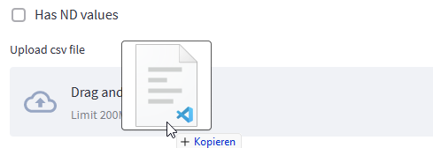
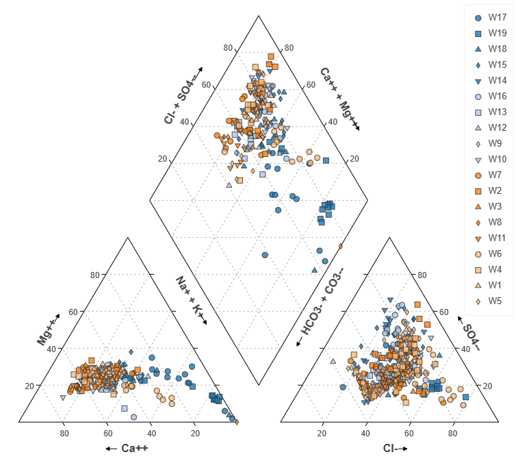

Quick Start
Exploring the demo dataset
The demo dataset includes 54 samples from the groundwater monitoring network of Basel (Switzerland). The raw data can be found on the city's Opendata portal.
Inspecting the table and fields in the Load Data section, you will note that the dataset includes a station-name, coordinates, sampling date and the major ions calcium magnesium, sodium, potassium, chloride, sulfate, bicarbonate, and carbonate. The data table has basic interactivity features: By hovering over the header cells, you can change the column width, and clicking on a header cell allows you to sort the table ascending and descending according to the values in this column. If you wish to inspect the data with your locally installed editor or spreadsheet software, you can download the table by clicking the Download data as CSV button.
To get an impression of the Piper diagram using the initial settings, navigate to the Show Plot section and press the Plot button above the Documentation link in the sidebar. You will see the following output:

Hovering over the markers in the plot will display a tooltip with the values for this sample.

"Interacting with closely grouped or overlapping data points can be challenging. Fortunately, the zoom tool comes in handy in such situations. To use it, simply activate the zoom icon in the toolbar located to the right of the plot. Then, zoom in on the section with overlapping symbols. This will result in an enlarged plot where it is much easier to select and view individual markers and their respective compositions. To restore the original setting, press on the icon in the plots toolbox.

Group by Plot Option
To inspect analyses from a single station one by one, proceed as follows:
In the filter box in the sidebar, select one or several stations. Then press plot again to display the diagram based on the filtered data. If you wish to inspect every single station, you should use the Group plot by option from the Plot settings tab. Select a station from the list of available group-by-fields to generate a separate plot for each expression found in the station.

There are two ways of assigning text to each diagram showing which station is represented. Use the title option and include the group-by-field within curly brackets. After pressing the Plot button again, each plot will now include a title with the station name.

Ultimately you will want to save your plot to a file so you can include it in your report. In the plot settings, you can choose the output format. PNG files are a common bitmap format and can be included in most documents. The png format has its limitations when scaling up. The SVG format is a vectorized format and therefore does have the mentioned scaling limitations. However, it is not as widely importable in all graphics text processing software as the PNG format. Sometimes, SVG files are not completely rendered when imported.
After choosing your preferred format, you have to select the save images option in the settings box of the sidebar. With this option active, Fontus generates an image file for each rendered plot. You can download the images of the last run using the Download Image button in the sidebar. The file is downloaded to your download folder and can be retrieved from there. If you have generated multiple plots by using the group plot by function, all imaged files will be summarized in a single zip file.

Use of Markers
Markers are commonly divided into different groups by applying different colors, sizes, and shapes. Use the Group legend by option to define which field will be used. Station, aquifer, sampling event, year, or season are typical candidates. In our demo dataset, there is only a single field available for grouping, the station field. However, Fontus allows the calculation of various time aggregation fields based on the sample_date field. In the Load Data tab, check the checkboxes Year column, Month column, and Season column.
![](./img/quickstart07.png
The process of generating the columns will result in the addition of these fields to the imported data, making them accessible for grouping or filtering just like the imported data. For instance, you can select the year field in the Group Legend's selectbox and use {year} as the plot title to produce a separate plot for each year with available data.

To show different symbols for each year, set the Group legend by option to year. You may also define the markers. Fontus allows you to define a list of marker types, a color palette, and the number of colors from this palette. There are three ways to generate symbols automatically.
- Option 1 will cycle through symbol types first, then through the colors. Therefore the first marker will be a blue square, a blue circle, then a light blue square and a light blue circle, and so on, until there are no new codes for which markers must be generated. The result is shown below.
- Option 2 will cycle through colors first while holding the symbol constant. Once all colors have been used, the second marker type will be used, etc.
- Option 3 moves through symbols and colors simultaneously. Make sure that you have defined the same number of colors and symbols. This option is helpful if you know the number of markers needed. This number is not more significant than the list of defined symbol types and colors, as once markers have cycled through all colors, the same combination of type and color will be generated again.

Upload your own Data
This chapter explains the steps for uploading and exploring your own dataset, which is the standard way of using this software once you know your way around. The current example uses a dataset from Liu et al and can be downloaded directly from https://lcalmbach.github.io/fontus-help/data/data_Liu_et_al_2021.csv, or from its original location https://github.com/jyangfsu/WQChartPy/blob/main/data/data_Liu_et_al_2021.csv. Store the file locally on your disk.
- Navigate to the
Load Datatab. - Set the
Upload Dataradio button to upload the dataset. - Set the
Separator Characterto comma (,). - Drag and drop the saved data file on the
Upload CSV filefield.  - In the fields section, you may notice that a number of fields were detected as string-type fields and therefore assigned as
group-fields. This does not have any impact on calculations, but it may unnecessarily overload the filter section. Only the fields id and shortid have a limited number of distinct values and therefore are good candidates for group-by fields. All other string fields (X, Y, Sy, Sm) may be set to the Map the type asNone. Also note that in the bottom section, you can select the default carbonate parameter. In natural water HCO3- + CO3-- and Alkalinity should be very similar since Alkalinity is equal to: HCO3- + CO3-- + OH- and some other species, present in very small concentrations in ambient water. Alkalinity should be expressed in mg/L as CaCO3. - Set the
Plot legend byparameter to shortid - Navigate to the
Show Plottab and press thePlotbutton in the sidebar. - The following plot should show in the main window:

This concludes the quickstart tutorial.